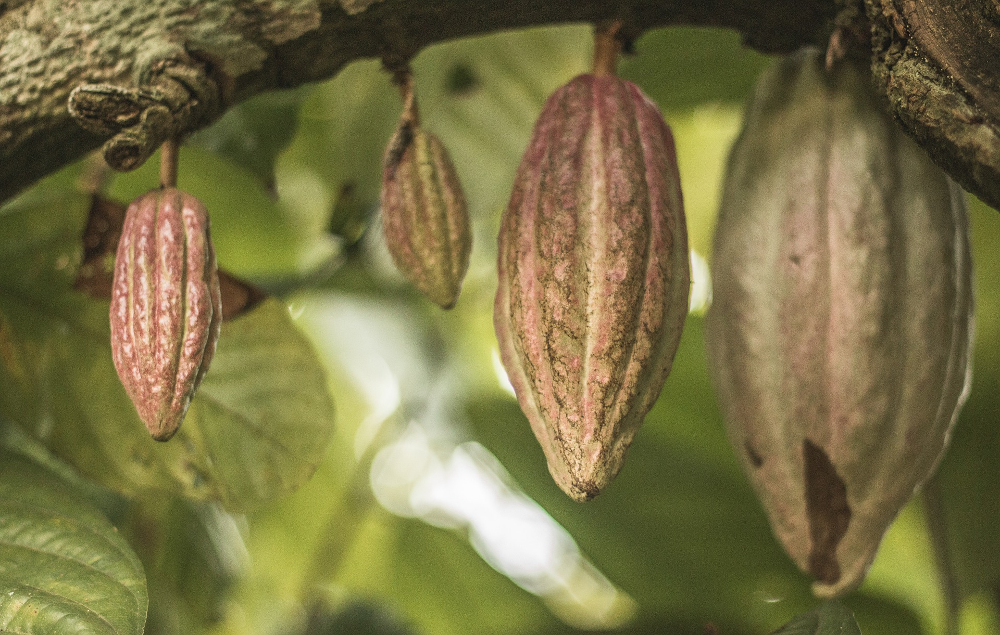
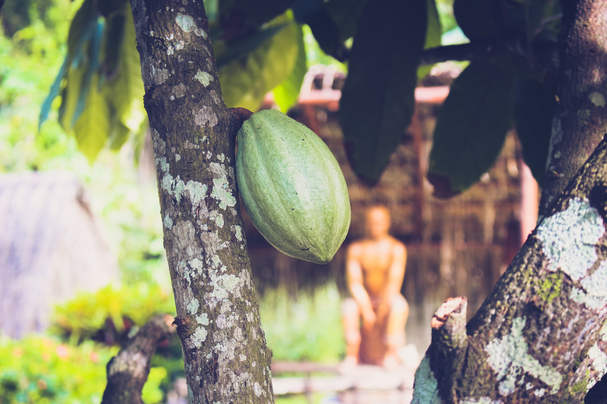

Interesting Facts

- It takes a cocoa tree 5 years to produce its first seed pods
- It takes 400 cocoa beans to make a pound of chocolate
- National Cocoa Day is on December 13th
- There are four different types of cocoa: Criollo, Forastero, Trinitario, and Nacional
- Cocoa is pollinated by flies and occasionally bats
- The Mayans and Aztechs used cocoa beans as currency to buy goods
- The Mayans and Aztechs valued cocoa beans more than gold
- Each cocoa tree produces 1,000 cocoa beans
- Cocoa beans and cacao beans are not the same
- An average cacoa tree lives to be about 200 years old but only gives cocoa beans for 25 years

- Every stage of cocoa production is done by hand
- Over 70% of cocoa comes from West Africa
- Cocoa and the chocolate that comes from it is known to be an aphrodisiac
- Chocolate from different places taste different because of the climate and type of soil the cocoa tree grew in
- Cocoa beans have some caffeine in them
Go to top